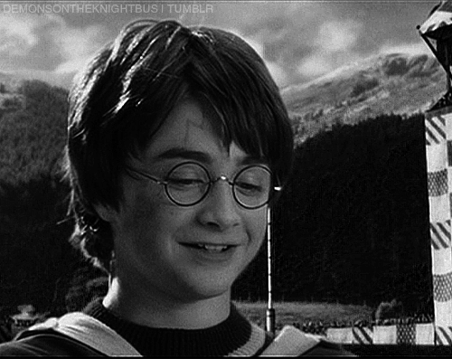

Harry James Potter es el protagonista de la serie de libros Harry Potter de J. K. Rowling. En su undécimo cumpleaños se entera de que es un mago y la trama de los libros se centra principalmente en los años en los que el huérfano Potter concurre al Colegio Hogwarts de Magia y Hechicería para practicar bajo la guía del director Albus Dumbledore y demás profesores. Allí, Harry también descubre que ya es famoso en todo el mundo mágico y que su destino está atado al de lord Voldemort, el mago tenebroso mundialmente temido y asesino de su madre y su padre.
En las ocho películas de Harry Potter estrenadas desde 2001-2011, Harry Potter ha sido interpretado por el actor británico Daniel Radcliffe. El productor David Heyman le pidió a Radcliffe que audicione para el papel de Harry en el 2000, al asistir a una obra titulada Stones in His Pockets en Londres. El papel ha sido altamente lucrativo para Radcliffe; para 2007, él tenía una riqueza estimada de £17 millones.
Caracterización
Apariencia
A lo largo de la serie, Harry es descrito con el pelo negro siempre despeinado de su padre, los ojos verdes brillantes de su madre, y una cicatriz con forma de rayo en su frente. Él es descrito con más detalle como "pequeño y muy flaco para su edad" con "un rostro delgado" y "rodillas huesudas". Usa gafas redondas, rotas y pegadas a él con cinta adhesiva a pesar de no ser miope. En el primer libro, la cicatriz es descrita como "Lo único que a Harry le gustaba sobre su apariencia". Cuando se le preguntó el significado detrás de la cicatriz en forma de rayo de Harry, Rowling dijo, "Yo quería que esté físicamente marcado por lo que ha atravesado. Era una expresión externa de lo que ha pasado en su interior. Le di una cicatriz en un lugar prominente para que las otras personas lo reconozcan. Es casi como ser el elegido o estar maldito, en un sentido." Rowling también dijo que Harry heredó el buen aspecto de sus padres. En la última parte de la serie Harry crece más alto, y para el séptimo libro se dice que es de "la misma estatura" que su padre.
Rowling explicó que la imagen de Harry vino a ella cuando imaginó al personaje por primera vez, viéndolo como un "niño flaco, con pelo negro y gafitas". El también mencionó que piensa que los anteojos de Harry son la clave de su vulnerabilidad.
Personalidad
De acuerdo con Rowling, Harry es fuertemente guiado por su propia conciencia, y tiene un gran sentido de lo que está bien y mal. Al tener "acceso muy limitado a adultos de confianza", Rowling dijo, Harry "se ve forzado, para alguien tan joven, a tomar sus propias decisiones." Él "comete errores repetidamente", admitió ella, pero al final, él hace lo que su conciencia le dice que haga. De acuerdo con Rowling, una de las escenas cruciales de Harry fue en el cuarto libro, cuando protege el cuerpo de su compañero muerto Cedric Diggory de Voldemort, ya que muestra su valentía y altruismo.
Rowling dijo que entre los defectos del personaje de Harry están la ira y la impulsividad; sin embargo, Harry también es naturalmente honorable. "Él no es un niño cruel. Es competitivo, y es un luchador. Él no sólo se recuesta y se abusa. Pero él sí tiene integridad nata, lo que lo hace un héroe para los lectores. Es un muchacho normal, pero con aquellas cualidades que la mayoría de nosotros realmente admiramos. En su mayoría, Harry muestra humildad y modestia, a veces menospreciando sus logros; aunque usa una letanía de sus aventuras como ejemplos de su madurez al comienzo del quinto libro. Sin embargo, estos mismos logros son luego empleados para explicar por qué el debía liderar el Ejército de Dumbledore, momento en el que él afirma que solo tuvo suerte, y niega que lo hagan digno de autoridad. Después del séptimo libro, Rowling comentó que Harry tiene una fuerza de carácter definitiva, la cual ni siquiera Voldemort posee: la aceptación de la inevitable muerte.

Habilidades mágicas
A lo largo de la serie, Harry Potter es descrito como un talentoso aprendiz de mago. Tiene un talento particular para el vuelo en escoba, lo que se manifiesta en Harry Potter y la piedra filosofal la primera vez que lo intenta, y le da un puesto en el equipo de Quidditch un año antes de la edad mínima normal para unirse. Él se convierte en capitán en su sexto año. En su cuarto año, Harry es capaz de confrontar a un colacuerno húngaro sobre su escoba.
Harry también es talentoso en Defensa contra las Artes Oscuras, en lo que se hace experto debido a sus repetidos encuentros con Voldemort y varios monstruos. En su tercer año, Harry logra realizar un encantamiento Patronus muy avanzado, y para su quinto año se hace tan talentoso en la asignatura que es capaz de enseñarle a sus compañeros en el Ejército de Dumbledore, algunos incluso mayores que él, a defenderse contra las Artes Oscuras. A fin de ese año, él obtiene siete MHB: un ‘Extraordinario’ —en Defensa contra las Artes Oscuras, algo que ni siquiera Hermione logra—, cinco ‘Supera las expectativas’ —en Cuidado de Criaturas Mágicas, Encantamientos, Herbología, Pociones y Transformaciones— y un ‘Aceptable’ —en Astronomía—. Las dos asignaturas restantes, Historia de la Magia y Adivinación, las reprueba con ‘Desastroso’ e ‘Insatisfactorio’, respectivamente. Él es un habilidoso duelista, el único de los seis miembros del Ejército de Dumbledore que no es herido ni incapacitado durante la batalla con los mortífagos en el Departamento de Misterios en Harry Potter y la Orden del Fénix. Él también repele a varios mortífagos durante su vuelo a la Madriguera al comienzo de Harry Potter y las Reliquias de la Muerte.
Harry también tiene la extraña habilidad de hablar y entender el pársel, el idioma de las serpientes, asociado con la magia oscura. Él obtiene esta habilidad debido a que alberga una parte del alma de Voldemort, y pierde esta capacidad después de la muerte de Voldemort al final de las Reliquias de la Muerte.